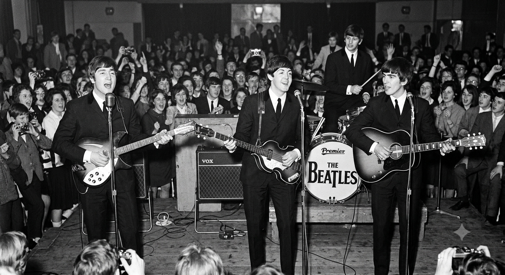

Meu primeiro post
Por:Yasmin Bicuda
Boas-vindas ao meu novo blog! Aqui vou compartilhar Fatos sobre os Beatles.

Por:Yasmin Bicuda
Boas-vindas ao meu novo blog! Aqui vou compartilhar Fatos sobre os Beatles.

Por:Yasmin Bicuda
Formada em Liverpool em 1960, **The Beatles** é amplamente considerada a banda mais influente e bem-sucedida da história da música moderna. Composta por **John Lennon, Paul McCartney, George Harrison e Ringo Starr**, o quarteto britânico não apenas revolucionou a indústria fonográfica, mas também moldou a cultura jovem global durante a década de 1960. O grupo iniciou sua trajetória tocando em clubes de Liverpool e Hamburgo antes de estourar mundialmente em 1963 com a chamada "Beatlemania" — um fenômeno social marcado pelo delírio de multidões de fãs por onde quer que passassem. **Evolução Musical e Legado** * **Da Pop ao Studio Art:** A carreira da banda é dividida entre os primeiros anos de rock & roll e pop contagioso (*Please Please Me*, *A Hard Day's Night*) e a fase de experimentação em estúdio (*Rubber Soul*, *Revolver*, *Sgt. Pepper's Lonely Hearts Club Band*). * **Inovação Técnica:** O grupo, ao lado do produtor George Martin, pioneirou técnicas de gravação, incluindo colagens de fitas, uso de instrumentos clássicos e orientais em faixas rock, e métodos inéditos de mixagem. * **Composição Colaborativa:** A parceria entre Lennon e McCartney produziu algumas das canções mais gravadas e executadas de todos os tempos, enquanto Harrison se consolidou como um compositor de destaque no final da década. Após o fim do grupo em 1970, todos os membros seguiram carreiras solo de grande impacto. Músicas como *Yesterday*, *Hey Jude*, *Let It Be* e *In My Life* permanecem referências fundamentais na cultura popular.